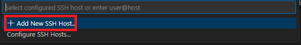
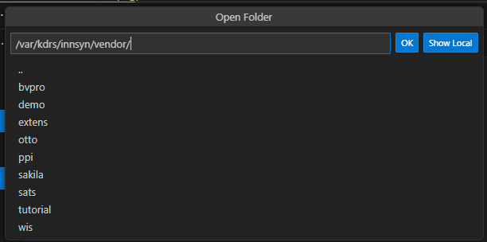

Part 0: Editing environment
This part of the guide will walk through some recommended options for editing XML template files on a Linux server.
There are many ways of doing this, but our method allows for seamless editing and saving of files on a remote server, in a modern editor with good support for XML files.
However, if you already have a workflow for this that you are comfortable with using, feel free to stick to that.
Installing VS Code
First we need Visual Studio Code, a text editor from code by microsoft. You can download VS Code here.
After installing VS Code, open VS Code, then open the following links in a browser and click “Install”. They will then open in the VS Code extension viewer where you have to click “Install” again (these extensions may be included in VS Code, if you already have them installed you will se an “Uninstall” button instead):
- Remote - SSH - allows for connecting to a remote machine via SSH and editing files directly in VS Code on your local machine.
- Remote - SSH: Editing Configuration Files - let’s you easily edit SSH config files in VS Code.
Note: Your browser may ask you if you want to open a link in VS Code. Accept this prompt
Connecting via SSH in VS Code
Click the remote button in the lower left corner of the screen.

Click “Connect to host”.

Click “Add new SSH Host”.
Enter the username and address of the server running KDRS Innsyn. For SSH this is formatted as
<username>@<address>. If you are unsure what to enter here, ask whoever is responsible for managing the server. You will also need the password for the user.

Select where you want to store the configuration file for SSH. The top option, in your user folder, is most commonly used.

Now the server should be added. Open the “Remote Window” again.
Click “Connect to host”.
Click the SSH host you just added.

Choose Linux if prompted.

If informed about the server’s fingerprint, click continue. This message appears the first time connecting to a server via SSH.

Enter the password for the account you connected to.

TIP: You can create an SSH certificate and add it on the Linux server to allow for easier SSH login without a password. This guide demonstrates one method of doing this.
Editing files on the remote machine
Click the “Explorer” button in the sidebar and select “Open Folder”.

Enter the path
/var/kdrs/innsyn/vendor/and click “OK”. This is the path of the folder where XML templates are stored.
Now we recommend adding the Red Hat XML extension. This should be installed in the VS Code window that is connected to a remote server to make sure it gets activated for remote use. Some benefits of this extension are:
- Warning messages if the XML is invalid
- Automatic formatting
- Automatic closing of tags (if you write
<hello>, you will automatically get</hello>) - And more…
Note: You can find more extensions to use if you want to, but be careful (especially if working with sensitive data). Just like browser extensions, they can contain malicious code. All extensions recommended in this guide are provided by Microsoft and Red Hat, both considered to be highly reputable.
- You are now ready to edit files. On the left side of the screen you can open the “Explorer” sidebar that let’s you navigate the
vendorfolder we opened and create files there. If you select a file in the explorer, it will open an editor window in the center.